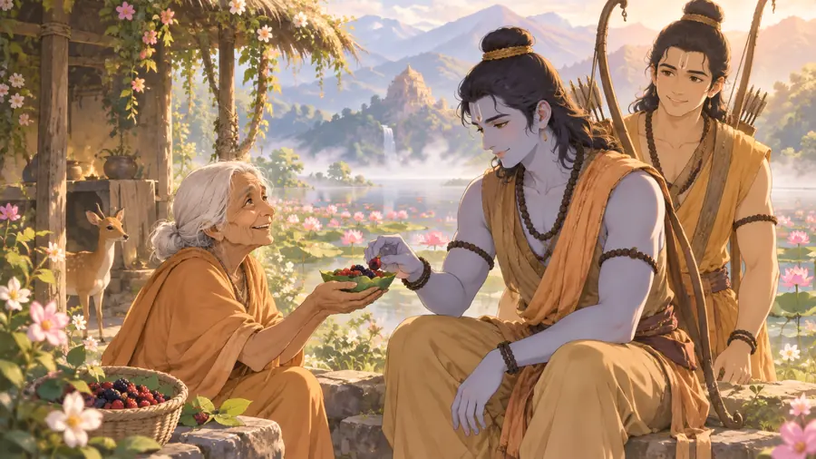

रामायणअरण्य काण्ड
वियोग, स्वागत और आगे का मार्ग
पंचवटी की सूनी कुटिया, जटायु का अंतिम संघर्ष और वन में शबरी का धैर्य भरा स्वागत।
Jatayu
वह महान पक्षी जो रावण को सीता को ले जाने से रोकने का प्रयास करता है।

रामायणअरण्य काण्ड
पंचवटी की सूनी कुटिया, जटायु का अंतिम संघर्ष और वन में शबरी का धैर्य भरा स्वागत।